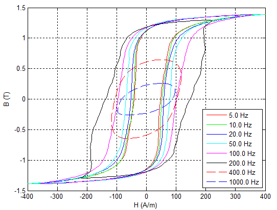
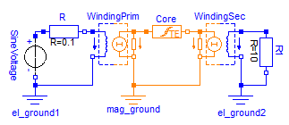

The elements provided in the package Shapes.HysteresisAndMagnets allow for consideration of ferromagnetic and dynamic hysteresis during the simulation of electromagnetic networks. The ferromagnetic hysteresis is a material property of the core material and frequency independent. Due to eddy currents the static ferromagnetic hysteresis is superposed by a frequency dependent hysteresis when the ferromagnetic material is exposed to an alternating magnetic field. Fig 1 exemplary shows the simulated hysteresis characteristics of a simple inductor with an iron core for three different excitation frequencies. Thereby, the 0 Hz hysteresis loop represents the static ferromagnetic hysteresis of the core material. The widening of the loops for higher frequencies is due to eddy currents induced in the core material.
|
|
Several models to describe the static hysteresis behavior of ferromagnetic materials are known. In this library two of them are implemented. The simple but fast Tellinen hysteresis model and the more accurate but complex Preisach hysteresis model. Click the links for a short description of both models.
| Name / Icon | Description |
|---|---|
GenericHystTellinenSoft
|
Flux tube element for modeling soft magnetic materials with ferromagnetic and dynamic hysteresis (eddy currents). The ferromagnetic hysteresis behavior is defined by the Tellinen hysteresis model. The shape of the limiting hysteresis loop is described by simple hyperbolic tangent functions with 4 parameters. Therefore, the hysteresis shape variety is limited but the parameterization of the model is very simple and the model is relatively fast and robust. |
GenericHystTellinenHard
|
Flux tube element for modeling the ferromagnetic (static) hysteresis of hard magnetic materials. The ferromagnetic hysteresis behavior is defined by the Tellinen hysteresis model. The shape of the limiting hysteresis loop is described by simple hyperbolic tangent functions with 4 parameters. |
GenericHystTellinenEverett
|
Flux tube element for modeling soft magnetic materials with ferromagnetic and dynamic hysteresis (eddy currents). The ferromagnetic hysteresis behavior is defined by the Tellinen hysteresis model. The Shape of the limiting ferromagnetic hysteresis loop is specified by an analytical description of the Everett function, which is also used to parameterize the GenericHystPreisachEverett model. A library of predefined parameter sets can be found in FluxTubes.Material.HysteresisEverettParameter. |
GenericHystTellinenTable
|
Flux tube element for modeling magnetic materials with ferromagnetic and dynamic hysteresis (eddy currents). The ferromagnetic hysteresis behavior is defined by the Tellinen hysteresis model. The rising and falling branch of the limiting ferromagnetic hysteresis loop are specified by table data. Therefore, almost any hysteresis shapes are possible. A library with predefined tables can be found at FluxTubes.Material.HysteresisTableData. |
| GenericHystPreisachEverett |
Flux tube element for modeling magnetic materials with ferromagnetic and dynamic hysteresis (eddy currents). The ferromagnetic hysteresis behavior is defined by the Preisach hysteresis model. The Shape of the limiting ferromagnetic hysteresis loop is specified by an analytical description of the Everett function. A library of predefined parameter sets can be found in FluxTubes.Material.HysteresisEverettParameter. |
GenericHystTellinenPermanentMagnet
|
Flux tube element for modeling the hard magnetic hysteresis of permanent magnets. The model is similar to GenericHystTellinenHard but has an initial magnetization preset of -100% and an adapted icon for better readability of the diagram. |
GenericLinearPermanentMagnet
|
Simple model of a linear permanent Magnet. Typical characteristics of common permanent magnetic materials can be found at FluxTubes.Material.HardMagnetic. |
Extends from Modelica.Icons.Information (Icon for general information packages).
| Name | Description |
|---|---|
DynamicHysteresis | Dynamic Hysteresis (Eddy Currents) |
HysteresisLosses | Hysteresis losses |
StaticHysteresis … | Static Hysteresis |
Some of the hysteresis flux tubes elements of the package HysteresisAndMagnets are capable of simulating eddy currents (dynamic hysteresis) additional to the static hysteresis behavior of the core material. The computation of eddy currents can be activated via the switch includeEddyCurrents in the "LossesAndHeat" tab of the corresponding elements parameter dialog. The total magnetic field strength H of the element is the sum of the ferromagnetic portion Hstat and the eddy current portion Heddy:

|
The eddy current portion of the magnetic field strength is the product of the classical eddy current factor (σcl) [BE01,Te98] and the time derivative of the magnetic flux density B(t):

|
Where σ is the electrical conductivity and d the thickness of the used electric steel sheets. Fig. 1 shows the decomposition of an exemplary dynamic hysteresis in its static and eddy current portion.

|
The following two figures show a comparison between measured and simulated dynamic hysteresis at several frequencies. The measurements were performed with a 25 cm Epstein frame according to DIN EN 60404-2. The magnetic core was made up of four layers of M330-50A steel sheet. The primary Winding of the used Epstein frame had 720 turns. The primary voltage was adjusted so that the magnetic excitation was about Hmax = 400 A/m, but 72 V in maximum. The simulation results (see Fig. 3) were generated with a simple model of this setup using the GenericHystTellinenTable hysteresis flux tube element for modeling the magnetic core.
|  |

|
Extends from Modelica.Icons.Information (Icon for general information packages).
The total power loss (LossPower) of an hysteresis flux tube element is the sum of the power loss due to the static ferromagnetic hysteresis (LossPowerStat) and the power loss due to eddy currents (LossPowerEddy).

|
The two components LossPowerStat and LossPowerEddy can be calculated as follows.

|

|
Where σcl is the classical eddy current factor (see UsersGuide.Hysteresis.DynamicHysteresis) and V the volume of the core material. The equations show that LossPowerStat acts as power sink and power source (magnetic energy storage) whereas LossPowerEddy is always positive (Power sink). By means of an simple example the following figures show the time course of the magnetic flux density, the magnetic field strength and the hysteresis losses. The pulsating course of the power loss (see Fig. 3c) makes it difficult to estimate an average loss. For this reason, the hysteresis flux tube elements are capable of directly computing the moving average of the power losses. Therefore, t_avg of the "LossesAndHeat" tab of the elements parameter dialog may be adjusted to set an adequate time interval (see Fig. 3d).
|  |

|

|
Extends from Modelica.Icons.Information (Icon for general information packages).
Generated 2018-12-12 12:10:54 EST by MapleSim.